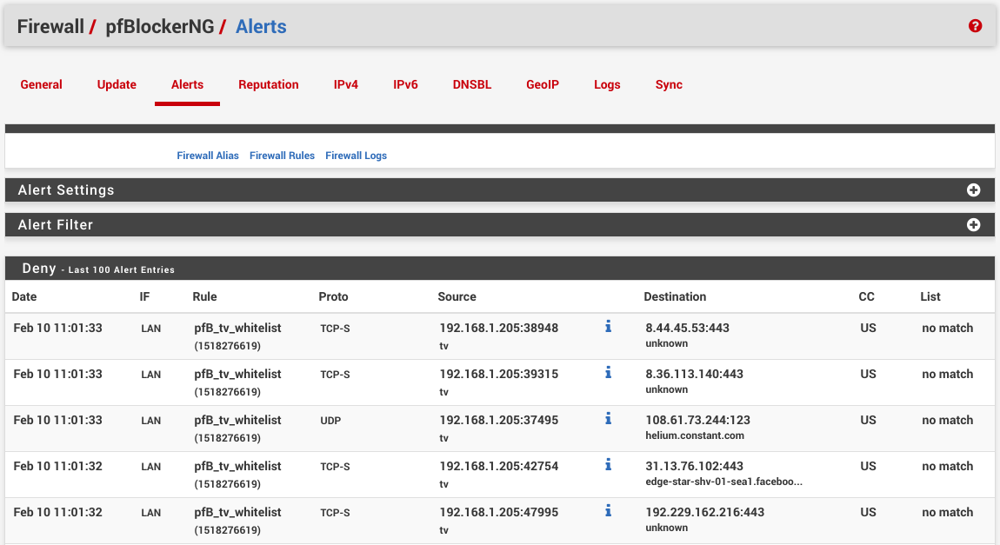

Like millions of other folks, I have a smart TV,
or simply a tiny android box that plays Youtube music and Amazon Prime videos.
I also like to run pfSense firewall, with pretty much
out-of-the-box setup.
While checking firewall logs, and reviewing the usual scans for open ports 23/22 on my network,
I decided to start blocking certain geo-locations. That's when I noticed my smart TV sending data
to two IPs in China, about every other minute.
Launching adb server, android shell and few minutes later -- the app responsible for those pings is
com.waxrain.airplaydmr2,
one of only 3 custom apps installed on the device.
This got me curious of what other traffic this smart TV is leaking. Among the
usual Nvidia telemetry (even though it was explicitly disabled in the OS setttings),
there is chatter to Adobe, Facebook and others.

With pfSense however, we can easily quiet this chatter down.
0. Strategy
First, we need to decide which traffic we care about.
I only care about youtube and amazon at this point, and while those two also query a ton of telemetry
we'll just have to take the bad with the good here. But outside of those two services,
the smart TV should be completely silent and invisible to the outside world.
In order to block other traffic, we will create a pfBlockerNG alias to isolate
google,
amazon,
and akamai
(content delivery service for amazon video) using
ASNs.
Upon alias update, pfBlockerNG will resolve those ASNs to IP addresses that we can reference in
firewall rules.
1. pfBlockerNG alias
If you haven't already, install pfBlockgerNG package, then navigate to Firewall / pfBlockerNG / IPv4,
click Add. Now pick a cool alias name
(such as tv_whitelist), set List Action: Alias Native, which means pfBlockerNG will only create an alias
(in Firewall / Aliases / URLs), and won't add actual firewall rules.
Further down in IPv4 Custom List tab, check Enable Domain/AS and paste following ASNs
into Custom Address(es).
AS15169
AS36040
AS22577
AS36561
AS14618
AS16509
AS11344
AS19047
AS7224
AS6432
AS16550
AS62785
AS58588
AS393560
AS393234
AS36183
AS35994
AS35993
AS32787
AS30675
AS23455
AS23454
AS22207
AS20189
AS18717
AS18680
AS17334
AS16702
AS16625
AS12222
Once alias is saved, run pfBlockerNG update and reload steps on Firewall / pfBlockerNG / Update page.
The log should state that a few thousands of IPs have been added, about 19000 as of this writting.
2. Firewall rules
With pfBlockerNG alias in place, on WAN firewall page (Firewall / Rules / WAN) add a new rule,
with Action: Block, set Destination to the IP of smart TV, and Source to pfBlockerNG alias
(in my case pfB_tv_whitelist), and check Invert match option. Since this rule is blocking,
Invert match will treat those IPs as a whitelist.
Similarly on LAN (Firewall / Rules / LAN), add a rule to Action: Block, Invert match
on Destination: pfBlockerNG alias and set Source as Single host or alias with IP of
the smart TV. It helps to enable Log in Extra Options tab, when testig.
If you still want your smart TV to communicate with other devices on LAN, like DNS/DHCP or debugging over WiFi,
then add another rule on LAN page, set Action to Pass, Source: smart TV IP, Destination:
LAN net, and make sure it's above the blocking rule. In the end it should look something like this:

3. Testing
If logging is enabled, you will see blocked traffic on Firewall / pfBlockerNG / Alerts page.

Another way to test is to block a different device on your network, like a smart phone, and verify that
you can still reach youtube and amazon on that device and nothing else. {kind=link}
{kind=link}